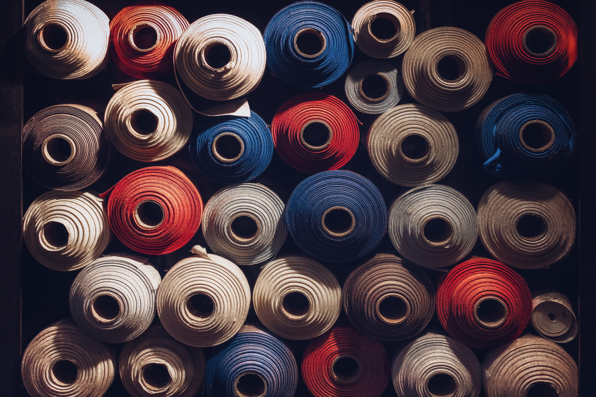

Sewing and textiles equipment training happens as requested by staff and/or community members. It is also the subject of some workshops. See workshops on the BTU Lab Calendar.
See the BTU Mischief Maker page to contact one of our community experts for sewing tutorials.
Materials: BTU LAB IS NOT A FREE SUPPLY STORE. But there are many ways to barter, including displaying your work in BTU, tagging us in social media, offering workshops, volunteering to organize supplies, and more. If you need something, we ask that you give something in return.